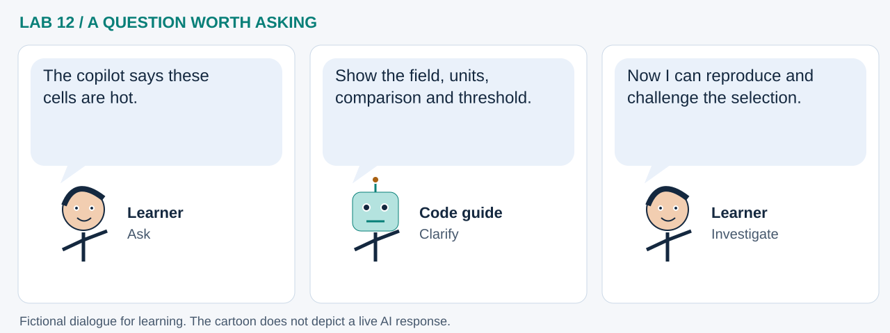

LAB 12 · 32-SECOND VISUAL WALKTHROUGH
A question becomes a checked operation
How can a copilot propose a spatial selection we can verify?
Silent, captioned storyboard. Use the player to pause, seek or change playback speed. On a small screen, use fullscreen or read the transcript below. The diagrams explain the method; they are not recordings of a live model run.
Download MP4 · Captions · Open infographic at full size

What runs here?
Synthetic data, plan validation, filtering, linked charts and exports run in Pyodide. The default run sends no model request.
Bounded AI handoff: the default plan is hand-authored; optional model requests run through a separate full-Python runner.
Transcript and code landmarks
- 00–08s · Ask
Start with a question that names a field, unit and threshold.
temperature >= 30 - 08–16s · Validate
Allow only defined fields and comparisons rather than executing generated Python.
apply_plan(table, plan) - 16–24s · Inspect
Link the same selected records to map outlines and charts.
selection_ids = set(selected.id) - 24–32s · Challenge
Move a threshold and observe how sensitive the selection is to the question.
update_threshold(threshold)
The common misconception

Read the cartoon dialogue
- The copilot says these cells are hot.
- Show the field, units, comparison and threshold.
- Now I can reproduce and challenge the selection.
Try explaining it
What would convince you that a live plan matches the hand-authored baseline?
Check your reasoning
Validate the operation, recompute it and compare selected cell IDs, not just the wording of the answer.
Original educational illustrations and captions authored for this repository. See the notebook for data and software citations.